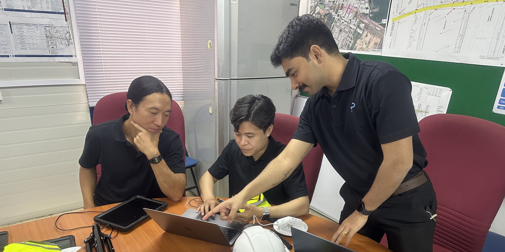
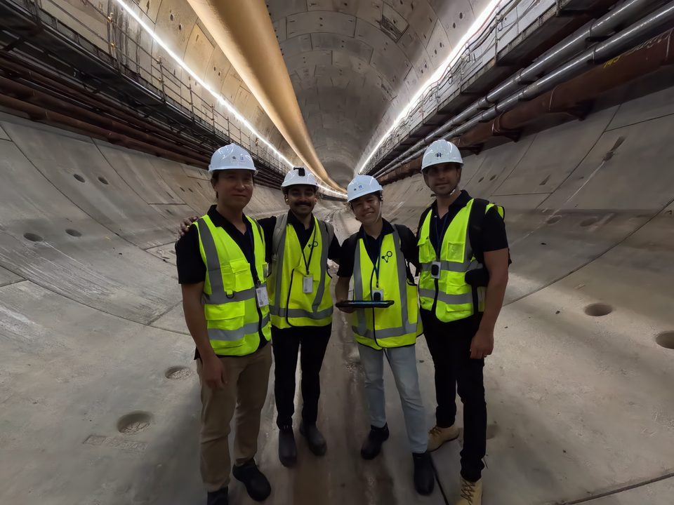
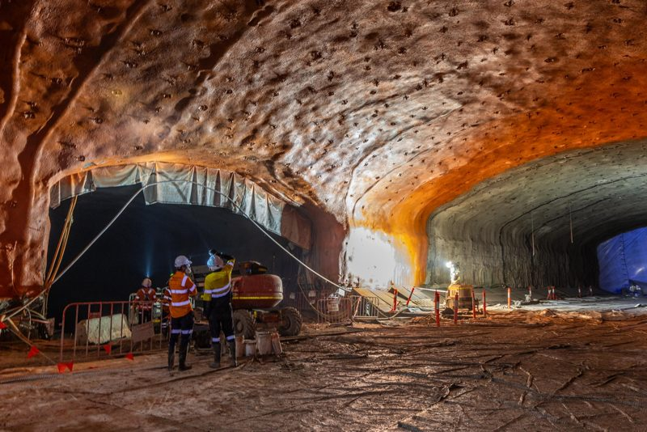
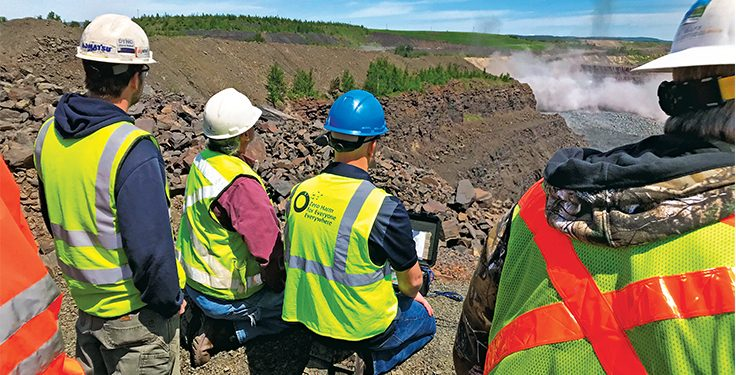
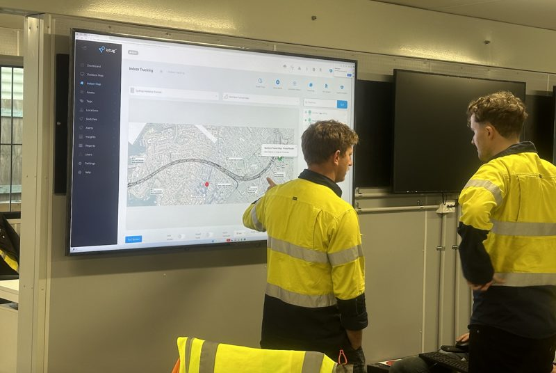
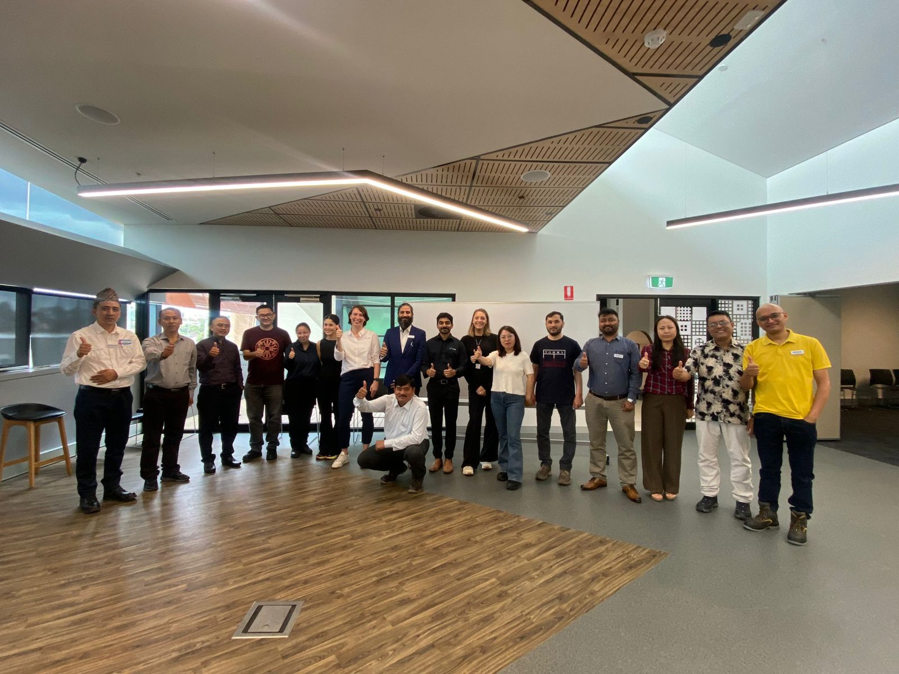
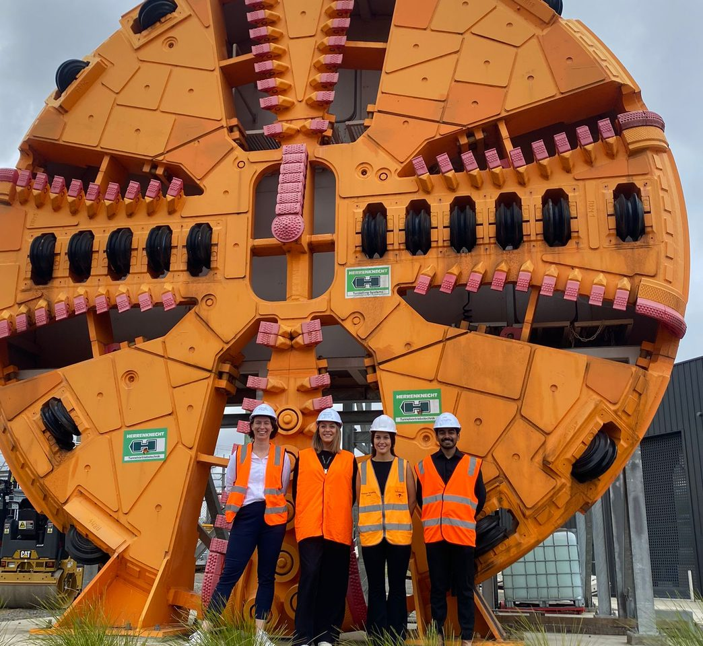

About Us
Engineering A Safer Future
Building technologies that help organisations move closer
to a Zero Harm future.
iottag is an engineering-led technology company committed to improving safety across some of the world's most demanding operational environments.
Together with our customers, partners and global engineering team, we're helping shape the next generation of safer, smarter operations.

Our mission
Building Towards A Zero Harm Future
Every worker deserves to return home safely.
Yet across mining, tunnelling, construction and critical infrastructure, serious incidents continue to occur despite decades of investment in safety.
At iottag, we believe technology can fundamentally change this.
Our mission is to help organisations better understand their operations, improve decision-making and ultimately contribute to a future where Zero Harm is no longer an aspiration, but an achievable reality.
Everything we design, engineer and deliver is guided by that purpose.
Our belief
We Believe Better Decisions Create Better Outcomes
Safer operations begin with informed decisions
Innovation should improve the lives of the people who depend on it every day
Engineering should solve real-world problems, not create new ones
Reliable technology should simplify complex operational challenges
These principles guide every product we develop and every partnership we build
Our people
Built By Engineers.
Driven By Purpose.
iottag is an engineering-led organisation bringing together specialists in software engineering, embedded systems, electronics, artificial intelligence, industrial design, cloud platforms and operational technology.
Our team works across multiple continents, collaborating every day to solve complex operational challenges through practical engineering and continuous innovation.
Different countries
Many disciplines
One shared mission
To build technologies that make industrial operations safer, smarter and more connected
Our global partners
One Mission. A Global Community.
Creating a Zero Harm future cannot be achieved alone.
That's why we work closely with customers, industry leaders, research organisations, technology partners and deployment specialists around the world who share our vision for safer and more intelligent operations.
Together, we are combining operational expertise, engineering and innovation to solve challenges that no single organisation could solve alone.
Our partnerships extend beyond technology.
They are built on trust, collaboration and a shared commitment to improving safety for everyone working in critical industries.
Our approach
Engineering Solutions That Matter
We build solutions for environments where operational decisions have real consequences.
Every product is developed alongside customers operating in mining, tunnelling, construction, infrastructure and other complex industries, ensuring our technology remains practical, reliable and focused on solving real operational challenges.




Looking ahead
A Future Worth Building
We know that creating a Zero Harm future is one of industry's greatest challenges.
It won't be achieved by one company, one technology or one idea alone.
It will be achieved through collaboration, engineering, innovation and a shared commitment to continually improving the way organisations operate.
We're proud to be working alongside our customers, partners and our global team to help build that future—one project, one deployment and one innovation at a time.

Why Organisations Choose iottag?
Engineering-led
Solutions developed by engineers for complex operational
Global delivery
Supported by engineering teams and international partners across multiple regions
Purpose-built technology
Proprietary software, AI and industrial hardware designed to work together
Long-term partnership
From design and deployment through to optimisation and ongoing support